source("exercises/ML_NIRS_beans_practical/helpers.R") # the functions used in the practical
source("slides/ml_deck_functions.R") # extra models for the comparison12 Machine Learning for Prediction in Plant Breeding
Author: Luis Fernando Delgado Muñoz
Session: Day 6, Monday 16 November
TipMaterials for this session
- Lecture slides
- Practical 1: explain and predict wheat yield, mixed model and random forest (ZIP). Unzip it, open the
.Rproj, and start withML_wheat_GxE_practical.Rmd. - Practical 2: NIR spectra of beans and PCR (ZIP). Unzip it, open the
.Rproj, and start withNIRS_beans_PCR_practical.Rmd. - Data: bean NIR spectra and laboratory values (CSV)
12.1 Learning objectives
- Explain the difference between explaining a trial and predicting a new sample
- Describe what near-infrared (NIR) light is and what a NIR spectrum measures
- Say which kinds of traits NIR predicts well (chemical) and which not (minerals, cooking and physical traits)
- Build a simple prediction model, principal component regression (PCR), and describe other common models in one sentence each
- Explain training, validation and test sets, and k-fold cross-validation
- Measure prediction quality with RMSE, bias, R² and RPD, and compare with a baseline
- Choose a model family for a given situation, and say when a simple model is enough
- Validate honestly and avoid data leakage, for example by keeping all samples of a bean line in the same fold
Most of this course uses models to explain a trial: is there a difference between lines, how large is it, how sure are we? Machine learning (ML) is used for another goal: to predict a value for a new sample. We may not need to understand every step of the model if it predicts well. But we do need to know how well it predicts in the situation where we will use it. This chapter is about that question, with NIR spectra of common beans.
NoteFunctions in a separate file
To keep the code short, the work is done by functions in helpers.R: load_bean_nir(), prepare_spectra(), fit_pcr(), predict_pcr(), quality(), make_folds(), cv_predict() and cv_curve(). You can open the file to see how each one works. The practical uses the same file.
12.2 Prediction against explanation
| Explain (inference) | Predict | |
|---|---|---|
| Question | Why? Is there an effect? | What will the value be for a new sample? |
| Typical tools | ANOVA, mixed models | PCR, PLS, random forest, boosting |
| Result | An effect size and a p-value | A number for each new sample, and its error |
| A model is good when | The assumptions hold and the design is sound | It predicts samples it has never seen |
A model can explain well and predict badly, and the other way around.
12.3 Where prediction pays in a breeding programme
Some measurements are slow or costly: laboratory analysis of phytate, sugars or protein, scoring disease in the field, phenotyping every line in every trial. A prediction model learns the link between a cheap measurement (a NIR spectrum, an image, a marker) and the expensive one. We measure the expensive trait on a few samples, build the model, and then use the cheap measurement on all samples.
In a mutation breeding programme there can be thousands of M2 or M3 plants and lines. NIR on the seed allows a fast screening for composition. The interesting lines are then confirmed in the laboratory. Prediction does not replace the laboratory: it tells you where to look.

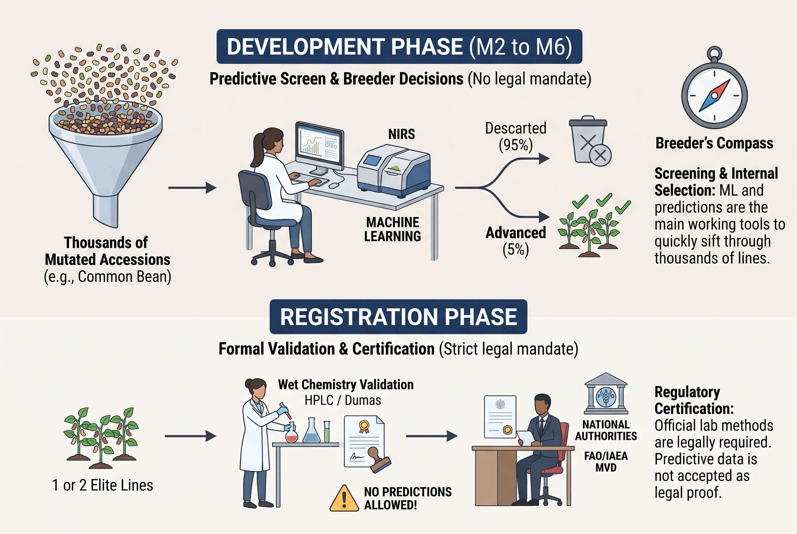
12.4 Machine learning in general
Machine learning is a part of artificial intelligence. The machine learns patterns from data, and nobody writes the rules.
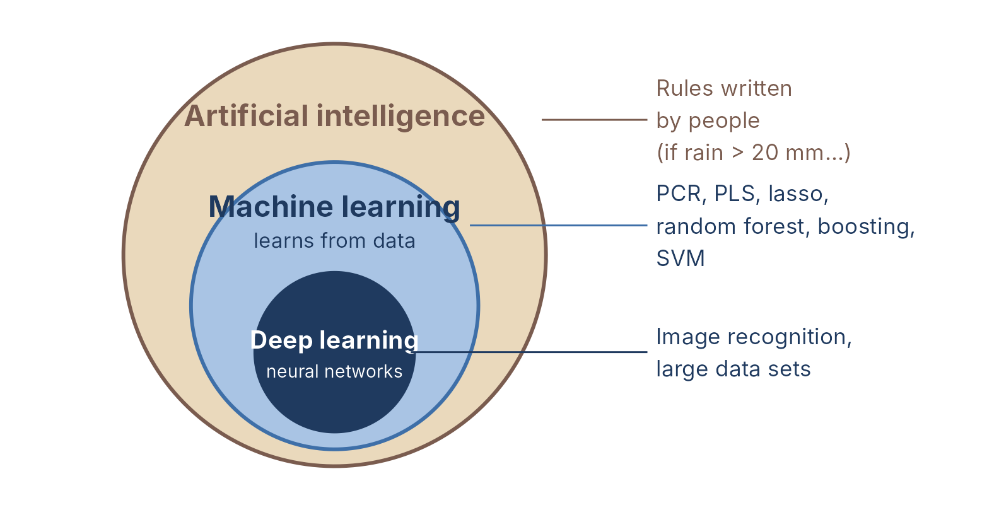
A machine can learn in three ways: supervised learning (we know the answer for the training samples, for example the laboratory value), unsupervised learning (we look for groups or structure with no answer, for example PCA or clustering) and reinforcement learning (the machine learns by trial and reward). Almost everything in this chapter is supervised.
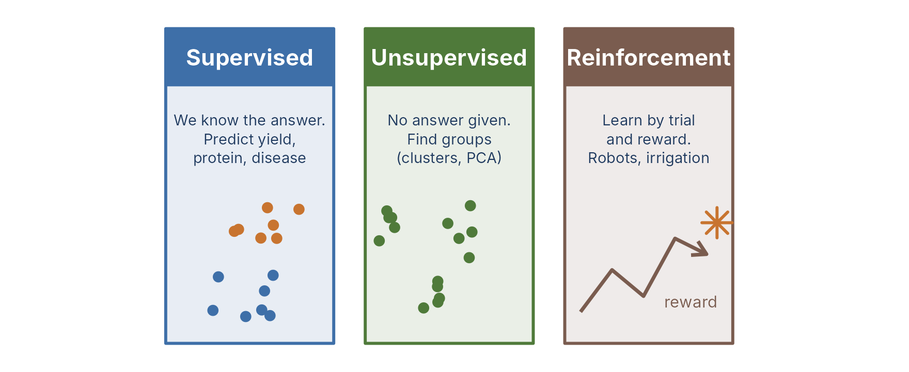
Machine learning is used in agriculture for many tasks, such as crop and yield prediction, disease and pest detection, soil and water management, and phenotyping with images (examples as described by DeHaat and GeoPard, see the references).
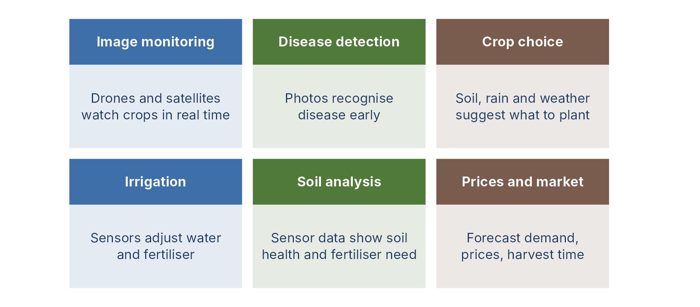
A supervised model can answer two kinds of question. Regression gives a number (for example phytate in mg/g). Classification gives a class (for example grain colour). In this chapter we do regression.
Underfitting and overfitting. A model that is too simple misses the pattern (underfitting). A model that is too flexible follows the noise: it is perfect on the samples it has seen and bad on new ones (overfitting). That is why we always test on samples the model has not seen. For an interactive explanation, see The Bias-Variance Tradeoff of MLU-Explain.

The life of a model. A model is never finished. We collect data, prepare it, train, validate and use the model. With a new season, instrument or variety we check the error again and retrain.

Benefits. Faster and more consistent decisions, earlier warning of pests, diseases and stress, better use of water, fertiliser and laboratory time, and more lines screened with the same budget. Challenges. Cost of sensors, drones and instruments, training and digital skills, data privacy and security, models that are hard to explain, and poor internet and technology in rural areas.
12.5 Train, validation and test
When we build a prediction model we cut the data into parts, and each part has one job.
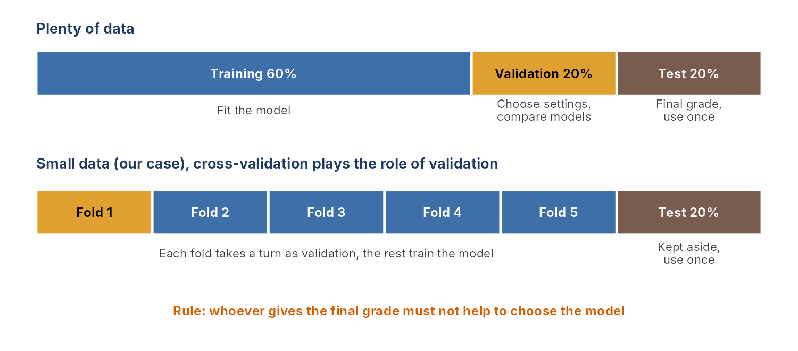
- Training is used to fit the model.
- Validation is used to choose settings (for example the number of components) and to compare models.
- Test gives the final grade. It is used once.
If the test set helps to choose the model, the final number is too good. The rule is: whoever gives the final grade must not help to choose the model. With small data (117 samples, or 2,112 plots) three separate parts leave too little in each one. Then we use k-fold cross-validation inside the training data in place of a validation set, and we keep a test set apart, or we use a nested validation, as in the model comparison below. In Practical 1 we split the wheat data in two ways, random folds and folds by environment.
12.6 Practical 1, explain and predict wheat yield
The data are the yield of 24 durum wheat genotypes in 22 environments. The same data answer two different questions:
- Explain. A mixed model shows where the variation comes from. Environment explains about 65% of the variance, residual 20%, the block within the environment 10% and the genotype only 5.5%.
- Predict. A random forest (many decision trees, each on a random part of the data, with the answers averaged) predicts the yield of a plot.
- Test honestly. With random folds the forest looks very good (RMSE 0.54 against 0.82 for “always the mean”), because plots of the same environment are in training and in test. When a whole environment is left out, the forest is no better than the mean (RMSE 0.90 against 0.87). The model learned the environments, not the genotypes.
Use the wheat ZIP file at the top of this chapter. The practical takes about 20 minutes and has the same structure as the bean practical.
12.7 Light we can see and light we cannot see
Light is a wave, and its wavelength (in nanometres, nm) tells us what kind of light it is. Our eyes see only 400 to 700 nm. The NIR region starts just after the red edge, at about 750 nm, and goes to about 2,500 nm. Before the visible there are ultraviolet light and X-rays; after the NIR there are the mid and thermal infrared, microwaves and radio waves.

A NIR instrument sends light onto the sample (for example whole seed or flour). The sample absorbs some wavelengths and the instrument records the light that comes back. The result at each wavelength is the spectrum. It is fast, it needs no chemicals, and the sample is not destroyed. But the spectrum is indirect: we need a model to turn it into a number.
12.8 What NIR can “see”
Molecules absorb NIR light when their bonds vibrate. In the NIR region the strongest bands come from bonds with hydrogen: O-H (water, sugars, starch), N-H (protein) and C-H (oil, sugars, starch). Figure 12.2 shows where many chemical groups absorb. It is drawn from the data of Goddu and Delker (1960), compiled by S. D. J. Brown.

Figure 12.3 is a simple summary for food and grain. The bands are broad and overlap, so we cannot read a compound from one wavelength. That is why we need a calibration model.
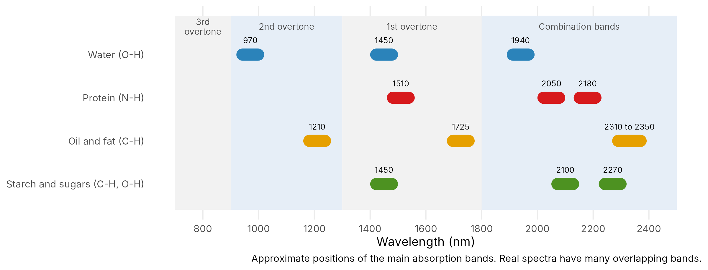
ImportantNIR sees bonds, not elements
NIR works well for chemical traits made of organic molecules: water, protein, oil, starch, sugars, fibre and phenolics. It works poorly for traits that are not built from organic bonds or that have many physical causes:
- Minerals such as iron and zinc: a metal has no NIR band. A model can only use the link between the mineral and the organic matrix, so it is indirect and weaker.
- Physical and cooking traits such as cooking time, water absorption, hardness or texture. They depend on the seed coat, structure and storage, not on one chemical group.
So NIR is very good for chemical variables and less good for physico-chemical ones. Always test each new trait before you trust a model.
12.9 The NIR spectra of beans
The data come from common bean seed samples of CIAT: 117 samples of 44 lines (most lines have 3 repeats), with NIR spectra from 400 to 2,500 nm (here every 2 nm, 1,050 variables) and 13 laboratory traits.
bean <- load_bean_nir("data/bean_nirs.csv") # lab, X (spectra), wl, line
lab <- bean$lab
X <- bean$X
line <- bean$line
dim(X)[1] 117 1050table(table(line)) # lines with 1, 2 or 3 samples
1 2 3
6 3 35 traits <- c("water_absorption", "cooking_time", "iron", "zinc", "phytate", "phenolics",
"verbascose", "stachyose", "raffinose", "sucrose", "fructose",
"total_sugars", "total_oligosaccharides")
tab <- data.frame(trait = traits,
mean = sapply(traits, function(t) mean(lab[[t]])),
sd = sapply(traits, function(t) sd(lab[[t]])),
min = sapply(traits, function(t) min(lab[[t]])),
max = sapply(traits, function(t) max(lab[[t]])))
knitr::kable(tab, digits = 2, row.names = FALSE)| trait | mean | sd | min | max |
|---|---|---|---|---|
| water_absorption | 98.08 | 5.49 | 81.49 | 116.51 |
| cooking_time | 32.60 | 5.19 | 23.97 | 67.35 |
| iron | 60.79 | 7.26 | 42.25 | 78.60 |
| zinc | 27.79 | 2.76 | 21.15 | 36.00 |
| phytate | 13.03 | 3.24 | 1.16 | 18.10 |
| phenolics | 5.10 | 1.86 | 0.02 | 9.13 |
| verbascose | 1.10 | 0.24 | 0.55 | 1.66 |
| stachyose | 25.42 | 2.13 | 20.71 | 32.32 |
| raffinose | 1.92 | 0.51 | 1.29 | 4.13 |
| sucrose | 34.98 | 5.74 | 18.81 | 47.82 |
| fructose | 0.11 | 0.09 | 0.01 | 0.48 |
| total_sugars | 60.42 | 5.37 | 49.98 | 72.77 |
| total_oligosaccharides | 28.44 | 2.29 | 23.12 | 35.57 |
Units: iron and zinc in mg/kg; phytate and sugars in mg/g; water absorption in %; cooking time in minutes.
plot_spectra(X, colour_by = lab$phytate, n = 60, legend_title = "Phytate")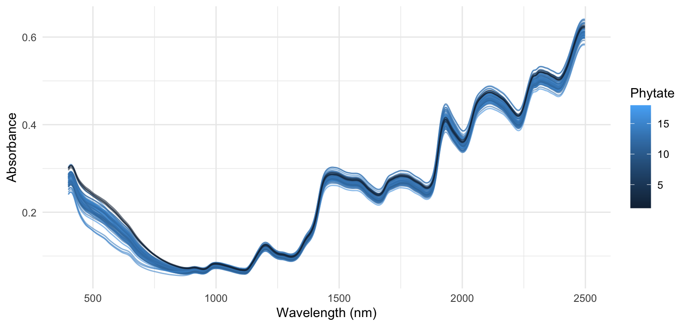
12.10 Preparing the spectra
Two light steps make the differences easier to see:
- SNV (standard normal variate): each spectrum is centred and scaled by itself. It removes differences in level caused by grain size and light scatter.
- First derivative: removes a sloping baseline and sharpens the peaks.
Z <- prepare_spectra(X)
dim(Z)[1] 117 1045plot_spectra(Z, colour_by = lab$phytate, n = 60, ylab = "SNV + first derivative", legend_title = "Phytate")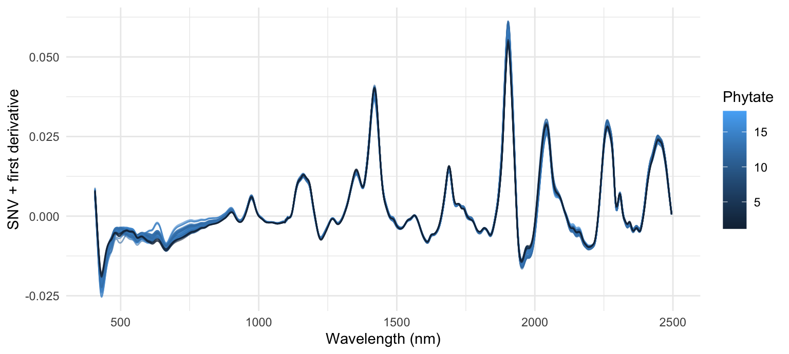
Each spectrum is treated on its own, so this step cannot leak information between samples.
Principal components. PCA summarises the 1,045 variables in a few new variables, the principal components. Here the first four hold 89 % of the variation.
pca <- prcomp(Z)
ve <- 100 * pca$sdev^2 / sum(pca$sdev^2)
ggplot(data.frame(PC1 = pca$x[, 1], PC2 = pca$x[, 2], colour = lab$colour), aes(PC1, PC2, colour = colour)) +
geom_point(size = 2.2) + labs(x = paste0("PC1 (", round(ve[1]), "%)"), y = paste0("PC2 (", round(ve[2]), "%)"), colour = "Grain colour")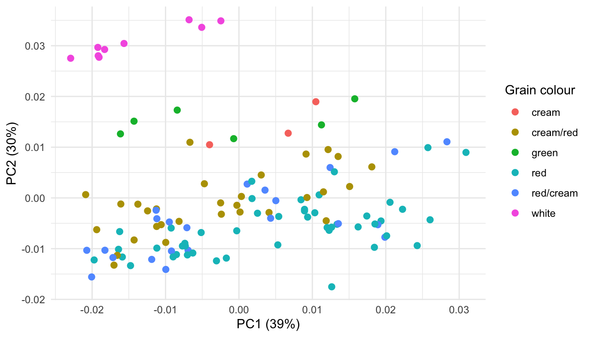
12.11 Measuring prediction quality
Let \(y_i\) be the observed value and \(\hat y_i\) the predicted value of sample \(i\), for \(n\) samples that were not used to build the model.
| Measure | Formula | Meaning |
|---|---|---|
| RMSE | \(\sqrt{\frac{1}{n}\sum (y_i-\hat y_i)^2}\) | Typical size of the error, in the unit of the trait. Small is good |
| Bias | \(\frac{1}{n}\sum (\hat y_i-y_i)\) | Is the model on average too high or too low? Close to 0 is good |
| R² | squared correlation of \(y\) and \(\hat y\) | Share of variation explained. Close to 1 is good |
| RPD | \(\mathrm{sd}(y)/\mathrm{RMSE}\) | How much better than predicting the mean for everyone |
A common guide for RPD (Williams): below 1.5 the model is not useful; 1.5 to 2 rough screening; 2 to 2.5 approximate quantitative prediction; above 2.5 good. The baseline “always predict the mean” has RMSE equal to the standard deviation, so RPD = 1. A model must beat the baseline. Wadoux et al. (2021, chapter 9) describe these measures and others, such as the RPIQ (using the interquartile range) and Lin’s concordance correlation coefficient (CCC), which are better for skewed data.
12.12 The models
12.12.1 Principal component regression (PCR)
PCR is the simplest model that works well for spectra. It has three steps:
- PCA of the spectra of the training samples (1,045 variables to a few components).
- A normal linear regression of the trait on the first k components.
- To predict a new sample, project its spectrum on the same components and use the regression.
You choose one number: k. In the code, the three steps are two functions: fit_pcr() and predict_pcr().
y <- lab$phytate
f_random <- make_folds(line, by_line = FALSE)
f_by_line <- make_folds(line, by_line = TRUE)
model <- fit_pcr(Z, y, ncomp = 12) # fit on all samples
round(quality(y, predict_pcr(model, Z)), 2) # same samples: too good, not a real testRMSE R2 bias RPD
1.82 0.68 0.00 1.78 The last line predicts the samples that built the model. It looks good, but this is not a test.
12.12.2 Other model families
| Model | In one sentence |
|---|---|
| PCR | PCA first, then a linear regression on the components |
| PLS (partial least squares) | Like PCR, but the components are built to be related to the trait. The classic NIR method |
| Ridge | A linear model that shrinks all coefficients, so no wavelength dominates |
| Lasso | Shrinks and sets many coefficients exactly to zero: it selects wavelengths |
| Elastic net | A mix of ridge and lasso |
| Random forest | Many decision trees, each on a random part of the data; the average is the prediction. It needs tuning and can overfit |
| Support vector machine (SVM) | Finds a smooth curve that stays close to the data; a kernel lets it follow curved relations |
| Boosting (GBM) | Many small trees built one after the other, each one fixing the errors of the previous ones |
Ridge, lasso and elastic net start from a linear model with one coefficient for each wavelength and add a penalty for large coefficients. Ridge makes all coefficients smaller. The lasso pushes many of them to exactly zero, so only some wavelengths stay in the model. Elastic net mixes the two. The strength of the penalty is chosen by cross-validation.
PCR and PLS are the traditional tools of NIR. Trees and boosting come from machine learning. The soil spectroscopy book of Wadoux et al. (2021) also describes Cubist and memory-based learning.
12.12.3 Comparison on one trait
We predict phytate with every model, with validation by line (Section 12.13 explains why). Inside each training set, the number of components or the penalty is chosen by an inner cross-validation.
Z5 <- thin(Z, 5) # average 5 neighbouring variables, for speed
models <- c("PCR", "PLS", "Ridge", "Lasso", "ENet", "RF", "GBM", "SVM")
P <- sapply(models, function(m) cv_model(m, Z5, y, f_by_line, line))
perf <- t(apply(P, 2, function(p) quality(y, p)))
perf <- rbind(perf, "Always the mean" = c(RMSE = sd(y) * sqrt(116 / 117), R2 = 0, bias = 0, RPD = 1))
knitr::kable(perf, digits = 2)| RMSE | R2 | bias | RPD | |
|---|---|---|---|---|
| PCR | 2.48 | 0.45 | -0.04 | 1.30 |
| PLS | 2.16 | 0.59 | 0.11 | 1.50 |
| Ridge | 2.40 | 0.47 | -0.01 | 1.35 |
| Lasso | 1.87 | 0.67 | -0.02 | 1.73 |
| ENet | 1.83 | 0.68 | -0.02 | 1.77 |
| RF | 2.09 | 0.61 | 0.00 | 1.55 |
| GBM | 1.82 | 0.68 | -0.06 | 1.78 |
| SVM | 1.88 | 0.66 | -0.14 | 1.72 |
| Always the mean | 3.23 | 0.00 | 0.00 | 1.00 |
All models beat the baseline, but none is excellent: phytate is a difficult trait. PCR is the weakest here. Lasso, elastic net, boosting and SVM do better (RPD about 1.7), but none reaches 2, so they are useful for rough screening only.
pl <- do.call(rbind, lapply(c("PCR", "PLS", "Lasso", "RF"), function(m) data.frame(model = m, obs = y, pred = P[, m])))
ggplot(pl, aes(obs, pred)) + geom_abline(linetype = 2) + geom_point(colour = "#2c7fb8", alpha = 0.7) +
facet_wrap(~model, nrow = 1) + labs(x = "Observed phytate (mg/g)", y = "Predicted phytate (mg/g)")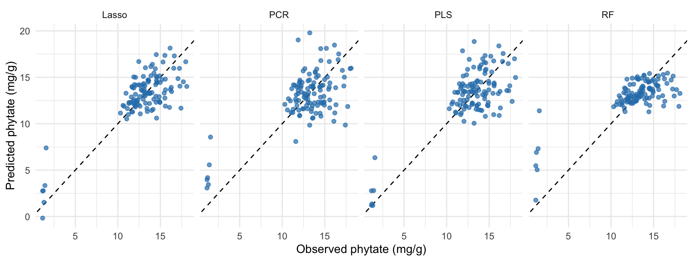
12.12.4 What the model uses
A lasso model keeps only some wavelengths. Where are they?
library(glmnet)
inner <- make_folds(line, k = 5, by_line = TRUE, seed = 7)
las <- cv.glmnet(Z5, y, alpha = 1, foldid = inner)
beta <- as.numeric(coef(las, s = "lambda.min"))[-1]
grp <- ceiling(seq_len(ncol(Z)) / 5)
wl5 <- as.numeric(tapply(as.numeric(colnames(Z)), grp, mean))
keep <- beta != 0
ggplot(data.frame(wavelength = wl5[keep], coefficient = beta[keep]), aes(wavelength, coefficient)) +
geom_col(width = 8, fill = "#2c7fb8") + labs(x = "Wavelength (nm)", y = "Lasso coefficient")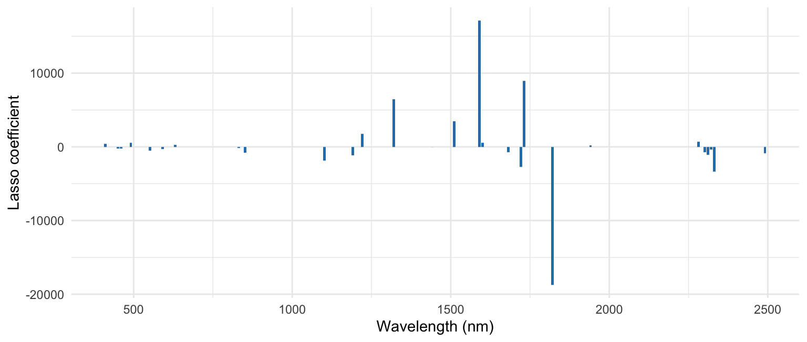
The lasso kept 30 of 209 variables. Compare their positions with the band map: do they sit near O-H, N-H or C-H bands? A model can predict well and still be hard to explain, so check that it uses sensible wavelengths.
12.12.5 Which model should I use?
| Situation | A good first choice |
|---|---|
| Many correlated variables, few samples (spectra) | PLS, ridge, lasso |
| You want to know which variables matter | Lasso or elastic net |
| Tables with interactions (genotype, environment, covariates) | Random forest or boosting |
| Very large data, images | Deep learning |
| You must explain the result to others | Linear or mixed models |
If two models are close, take the simpler one. With small data, small differences are noise. For interactive explanations of decision trees and random forests, see MLU-Explain, random forest.
12.12.6 How many components?
With few components the model is too simple; with many it learns the noise (overfitting). We try 1 to 25 components and look at the validation error.
cv_a <- cv_curve(Z, y, f_random, 25)
cv_b <- cv_curve(Z, y, f_by_line, 25)
curve <- rbind(transform(cv_a, folds = "random folds"), transform(cv_b, folds = "by-line folds"))
ggplot(curve, aes(components, RMSE, colour = folds)) + geom_line(linewidth = 1) + geom_point() +
labs(x = "Number of components", y = "RMSE of cross-validation (mg/g)", colour = NULL)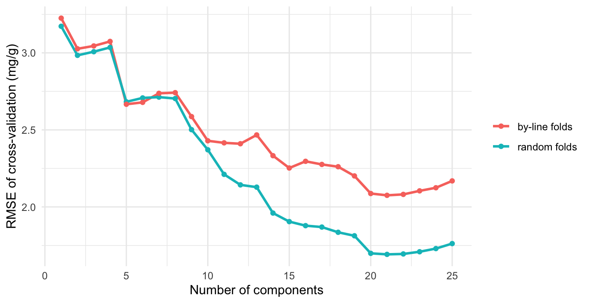
12.13 Knowing if the number is honest
The rule is simple: judge a model on samples it has not seen. In cross-validation we cut the data in k folds; each part is called a fold. Each time one fold is the test and the other folds build the model. With k = 5 there are 5 rounds and every sample is tested once. For an interactive version, see Cross-Validation of MLU-Explain.
| Method | How it works | Good for |
|---|---|---|
| Train and test split | One part builds the model, one part tests it | Large data sets |
| k-fold cross-validation | k parts; each part is the test once | Medium and small data sets (our case) |
| Leave-one-out | Every sample is the test once | Very small data sets, slow for large ones |
| Bootstrap | Random samples with replacement | Checking how stable the estimate is |
Whatever the method, the unit left out must be the unit you want to predict (a line, an environment, a year). That is the next topic.
12.13.1 Data leakage
Many bean lines have up to three samples that are almost the same bean. If the folds are random, one sample of a line can be in the training set and another sample of the same line in the test set. The model has already “seen” that line, so the test is too easy and the error looks too good. This is data leakage.
d9 <- data.frame(sample = lab$sample, line = line, fold_random = f_random, fold_by_line = f_by_line)
knitr::kable(d9[order(d9$line), ][1:9, ], row.names = FALSE)| sample | line | fold_random | fold_by_line |
|---|---|---|---|
| S001 | L01 | 8 | 4 |
| S037 | L01 | 3 | 4 |
| S075 | L01 | 3 | 4 |
| S002 | L02 | 9 | 9 |
| S038 | L02 | 8 | 9 |
| S076 | L02 | 9 | 9 |
| S003 | L03 | 1 | 1 |
| S039 | L03 | 10 | 1 |
| S077 | L03 | 9 | 1 |
With random folds the three samples of line L03 go to different folds (1, 10, 9). With folds by line they all go to fold 1. In breeding the question is: will the model work on a new line? So the validation must hold out whole lines.
trait_pick <- c("phytate", "iron", "cooking_time")
leak <- do.call(rbind, lapply(trait_pick, function(t) {
yy <- lab[[t]]
c1 <- quality(yy, cv_predict(Z, yy, f_random, 12))
c2 <- quality(yy, cv_predict(Z, yy, f_by_line, 12))
data.frame(trait = t, validation = c("random", "by line"), rbind(c1, c2)[, c("RMSE", "R2", "RPD")])
}))
knitr::kable(leak, digits = 2, row.names = FALSE)| trait | validation | RMSE | R2 | RPD |
|---|---|---|---|---|
| phytate | random | 2.14 | 0.56 | 1.51 |
| phytate | by line | 2.41 | 0.47 | 1.35 |
| iron | random | 5.69 | 0.39 | 1.28 |
| iron | by line | 6.47 | 0.26 | 1.12 |
| cooking_time | random | 4.74 | 0.21 | 1.09 |
| cooking_time | by line | 4.72 | 0.21 | 1.10 |
Random folds look better, but that is the leak, not a better model. Report the by-line numbers.
What about averaging the replicates? Using the mean spectrum and the mean value of each line is a valid choice for line-level decisions. It reduces noise and removes leakage, because each line is one point. The cost is that only 44 points remain and the error is on a different scale. Our advice is to keep all samples and validate by line, and to use line means as a second check.
Zm <- rowsum(Z, line) / as.vector(table(line)[rownames(rowsum(Z, line))])
Lm <- rownames(Zm); fm <- make_folds(Lm, k = 10)
avg <- do.call(rbind, lapply(c("phytate", "iron", "cooking_time"), function(t) {
yy <- lab[[t]]; ym <- tapply(yy, line, mean)[Lm]
a <- quality(yy, cv_predict(Z, yy, f_by_line, 12))
b <- quality(ym, cv_predict(Zm, ym, fm, 12))
data.frame(trait = t, data = c("all samples, by line", "line means"), rbind(a, b)[, c("RMSE", "R2", "RPD")])
}))
knitr::kable(avg, digits = 2, row.names = FALSE)| trait | data | RMSE | R2 | RPD |
|---|---|---|---|---|
| phytate | all samples, by line | 2.41 | 0.47 | 1.35 |
| phytate | line means | 2.23 | 0.76 | 2.03 |
| iron | all samples, by line | 6.47 | 0.26 | 1.12 |
| iron | line means | 5.69 | 0.32 | 1.18 |
| cooking_time | all samples, by line | 4.72 | 0.21 | 1.10 |
| cooking_time | line means | 6.60 | 0.17 | 1.03 |
The same idea holds for years, sites, plots or families: any group that is “the same thing” measured more than once must stay together in one fold.
# WRONG: samples of the same line can be in training and in test
folds <- make_folds(line, by_line = FALSE)
# RIGHT: all samples of a line stay together
folds <- make_folds(line, by_line = TRUE)
quality(y, cv_predict(Z, y, folds, ncomp = 12))12.14 What NIR predicts well, and what not
We use the same recipe (PCR, validation by line, number of components chosen between 1 and 25) for all 13 traits.
type <- c(water_absorption = "Cooking / physical", cooking_time = "Cooking / physical",
iron = "Minerals", zinc = "Minerals", phytate = "Organic compounds", phenolics = "Organic compounds",
verbascose = "Organic compounds", stachyose = "Organic compounds", raffinose = "Organic compounds",
sucrose = "Organic compounds", fructose = "Organic compounds", total_sugars = "Organic compounds",
total_oligosaccharides = "Organic compounds")
res <- do.call(rbind, lapply(traits, function(t) {
yy <- lab[[t]]
k <- which.min(cv_curve(Z, yy, f_by_line, 25)$RMSE)
data.frame(trait = t, type = type[[t]], R2 = r2(yy, cv_predict(Z, yy, f_by_line, k)))
}))
res$trait <- factor(res$trait, levels = res$trait[order(res$R2)])
ggplot(res, aes(R2, trait, fill = type)) + geom_col() + labs(x = "R² (PCR, validation by line)", y = NULL, fill = NULL)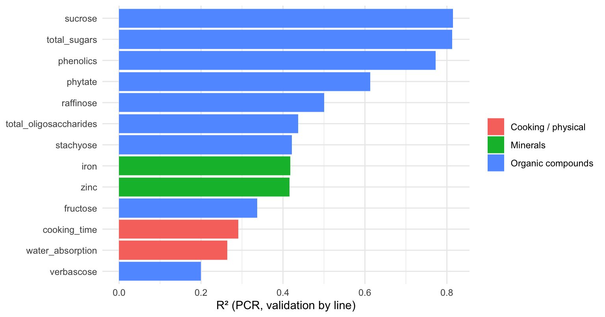
The picture agrees with the chemistry:
- Sucrose, total sugars and phenolics (organic molecules with many C-H and O-H bonds): the best, with R² about 0.8.
- Phytate and the other oligosaccharides: medium. Useful for screening, not for exact values.
- Iron and zinc: weak to moderate. NIR cannot see a metal; it sees what goes with it.
- Cooking time and water absorption: weak. They depend on the seed coat, storage and structure.
- Exceptions: fructose and verbascose are organic but weak. Not every organic compound works.
The number of components was chosen on the same validation folds, so these R² values are slightly optimistic. The model comparison above used a stricter, nested validation.
Published work gives the same message. In a CIAT study of common bean (Garcia et al. 2025), NIR predicted nitrogen well (CCC 0.84) and iron and zinc only moderately (about 0.4). A study of Croatian landraces (Vranić et al. 2019) found good prediction of nitrogen (R² 0.89), usable models for phytic acid and phosphorus, and poor models for iron and zinc. A 2026 review of legume breeding (Ghaitaranpour et al. 2026) also reports that visible and NIR models work best for composition and less well for appearance and texture, and that the human sensory panel remains the reference.
| Study | What they found |
|---|---|
| Garcia et al. (2025), CIAT, common bean | Nitrogen predicted well (CCC 0.84); iron and zinc only about 0.4 |
| Vranić et al. (2019), Croatia, common bean | Nitrogen good (R² 0.89); phytic acid and phosphorus usable; iron and zinc poor |
| Our data (CIAT beans) | Sugars and phenolics good; phytate medium; minerals and cooking weak |
Sensors other than NIR are used for sensory traits in legumes (taste, texture and appearance are slow to score with human panels):
| Sensor | Used for | Message from the review |
|---|---|---|
| NIR and Vis-NIR (with PLS) | Composition, some sensory scores | Works best for composition; weaker for appearance and texture |
| Colour images (RGB) | Seed colour, canning colour | Good for external traits only |
| Hyperspectral imaging | Flour quality, seed quality | Costly, needs large data |
| Electronic nose and tongue | Aroma, off-flavour | Still limited for large breeding populations |
12.15 Other uses and other validation units
The same workflow (cheap data, a model, honest validation) is used in many places in breeding.
| Data | Prediction | Note |
|---|---|---|
| Spectra (NIR) | Composition of seed or flour | What we did in this chapter |
| Image features | Plant traits, disease severity | Features first, then a model |
| Multi-environment trials | Yield and G×E in new environments | Use environment covariates (weather, soil) |
| Markers | Breeding values (genomic selection) | Very many variables, few lines: penalised models are common |
Some examples reported by Yoosefzadeh Najafabadi et al. (2023) and Yoosefzadeh-Najafabadi et al. (2025), as reported for the original studies:
| Crop and data | What was predicted | Result reported |
|---|---|---|
| Soybean, hyperspectral reflectance | Seed yield | Random forest best, 84% |
| Potato, light at chosen wavelengths | Virus infection | SVM, 89.8% accuracy |
| Wheat, drone sensors (multi-sensor) | Grain yield, early stage | Ensemble, R² up to 0.69 |
| Soybean, drone image time series | Relative maturity | CNN-LSTM beat local regression |
| Wheat, markers (multi-trait models) | End-use quality traits | +5.5% to +7.9%; flour protein up to +35% |
Flexible models can beat simple ones when the data are large; with small data, simple models are often as good. No best algorithm exists for every case. Start simple, and use a complex model only if it clearly predicts better on new data. Machine learning helps with non-linear links, many variables, several traits at once and environmental data for G×E. It does not win by default in genomic prediction, with small data sets, or when the data are biased. In genomic prediction, machine learning has not consistently beaten classical models such as GBLUP (Yoosefzadeh-Najafabadi et al. 2025), and reviews list large data needs, hard interpretation and biased data as limits (Yoosefzadeh Najafabadi et al. 2023).
Data leakage by line is one case of a general rule: leave out the whole unit you want to predict.
| You want to predict | Leave out together |
|---|---|
| A new line | All samples of that line |
| A new environment | All plots of that environment |
| A new season | All data of that year |
| A new line in a new environment | Both (hardest case) |
The function make_folds() takes any grouping variable, for example make_folds(environment, by_line = TRUE). The more different the new situation is from the training data, the larger the error. Test in the situation where you will use the model.
12.16 Limits of prediction models
Interpretability: trees, boosting and SVM are harder to explain than PCR or the lasso. Check that a model uses sensible wavelengths.
Transfer across crops: a bean model does not work for chickpea or wheat. Build and test a new one for each crop.
Small data: 117 samples from 44 lines give noisy estimates of R².
Another instrument, season or sample form (whole seed against flour): the model may not transfer. Check it and re-calibrate.
A model is valid only inside the range of the data used to build it.
The laboratory value is the reference: a noisy laboratory method limits the model.
A calibration is living: add new samples each season and check the error again.
12.17 Practical 2, beans and PCR
Use the bean ZIP file at the top of this chapter. You will follow the same workflow with short code and functions: look at the spectra, prepare them, fit PCR, validate with random folds and with folds by line, choose the number of components, compare a chemical trait (total sugars, phytate) with a physical one (cooking time, iron), and write a conclusion for a breeder.
12.18 Key takeaways
- Train, validation and test have different jobs. The test set gives the final grade and is used once. With small data, cross-validation replaces the validation set.
- ML is for prediction: it turns a cheap measurement into an estimate of an expensive one. It does not replace the experimental design or the mixed model.
- NIR measures bonds (O-H, N-H, C-H). It is very good for chemical traits and weak for minerals and physical or cooking traits.
- Prepare the spectra (SNV, first derivative) and start with a simple model: PCR or PLS.
- Report RMSE, R², bias and RPD, and always compare with “always the mean”.
- Avoid leakage: keep all samples of one line in the same fold. Random folds look too good.
- Use prediction to screen, and confirm the promising lines in the laboratory.
12.19 References
- Garcia, T., Carvajal-Yepes, M., Drewry, D. T., Santos, L. G., Duitama, J., Wenzl, P. and Chacón-Sánchez, M. I. (2025). Non-destructive prediction of nitrogen, iron and zinc content in diverse common bean seeds from a genebank using near-infrared spectroscopy. Food Chemistry: Molecular Sciences 11: 100316. DOI: 10.1016/j.fochms.2025.100316.
- Ghaitaranpour, A., Kebede, B., Duizer, L. M. and Yoosefzadeh-Najafabadi, M. (2026). AI-assisted nondestructive phenotyping of sensory-related traits in modern legume breeding. Smart Agricultural Technology 15: 102668. DOI: 10.1016/j.atech.2026.102668.
- Goddu, R. F. and Delker, D. A. (1960). Spectra-structure correlations for the near-infrared. Analytical Chemistry 32: 140-141. Data compiled by S. D. J. Brown, GitHub
sdjbrown/NIR-spectra-structure. - Vranić, M., Petek, M., Bošnjak, K., Lazarević, B. and Carović-Stanko, K. (2019). Prediction of macro and microelements content in Croatian common bean landraces (Phaseolus vulgaris L.) by NIR spectroscopy. Poljoprivreda 25(1): 48-55. DOI: 10.18047/poljo.25.1.7.
- Yoosefzadeh Najafabadi, M., Hesami, M. and Eskandari, M. (2023). Machine learning-assisted approaches in modernized plant breeding programs. Genes 14(4): 777. DOI: 10.3390/genes14040777.
- Yoosefzadeh-Najafabadi, M., Xavier, A., Eskandari, M. and Hesami, M. (2025). Machine learning after a decade: is it still a missing keystone in genomic-based plant breeding? Artificial Intelligence Review 58: 260. DOI: 10.1007/s10462-025-11274-y.
- Wadoux, A. M. J.-C., Minasny, B. and McBratney, A. B. (2021). Soil Spectral Inference with R. Springer. Chapter 9.
- MLU-Explain (Machine Learning University). Interactive articles on cross-validation, bias and variance, decision trees and random forests. mlu-explain.github.io
- DeHaat. AI and ML in agriculture (blog). dehaat.in/en/blog/ai-and-ml-in-agriculture
- GeoPard. Applications of machine learning for precision agriculture (blog). geopard.tech/blog/applications-of-machine-learning-for-precision-agriculture/
- Bean NIR data: CIAT (PhD work of L. F. Londoño), shared for training.